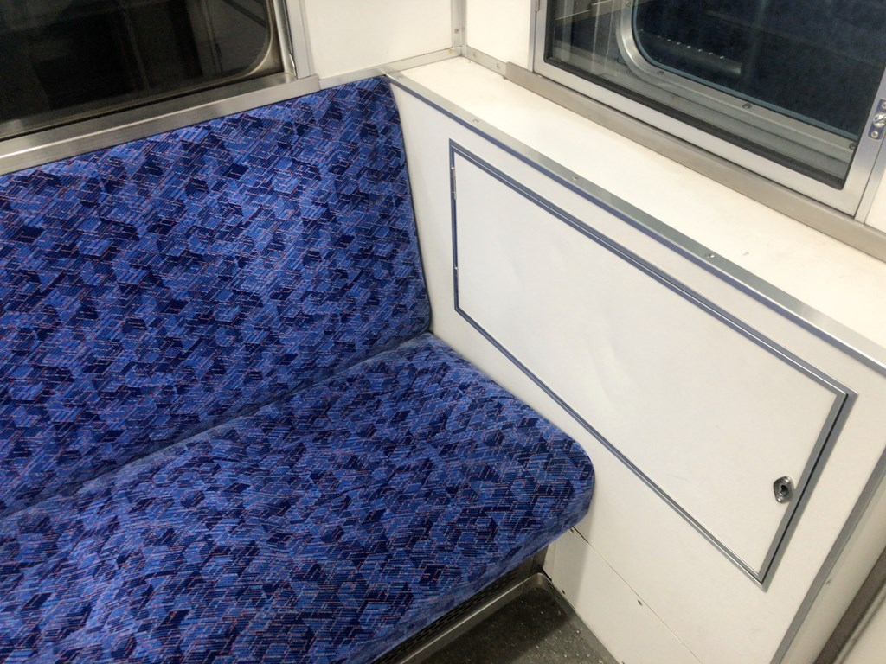
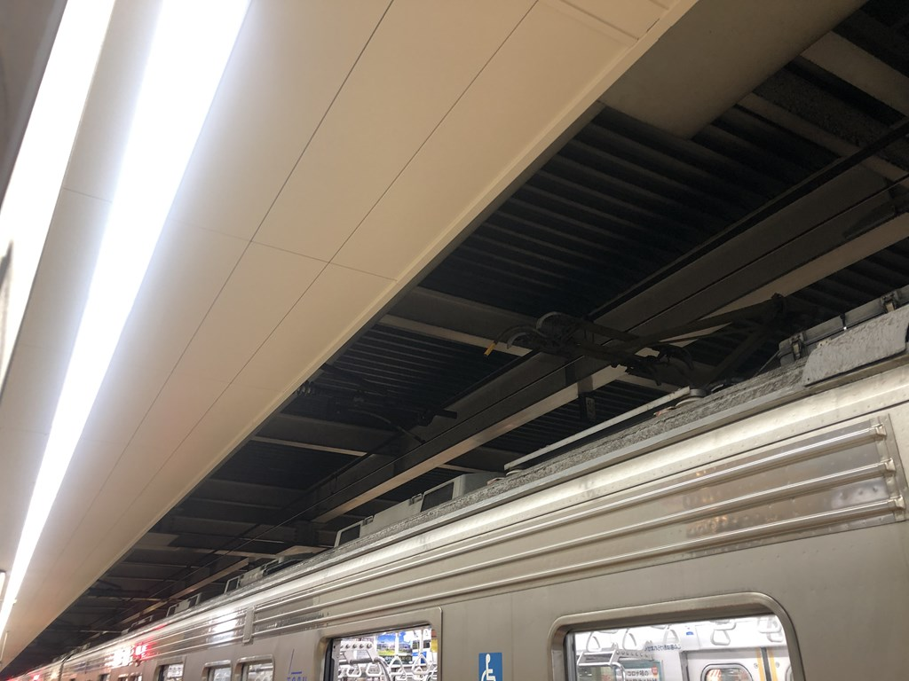
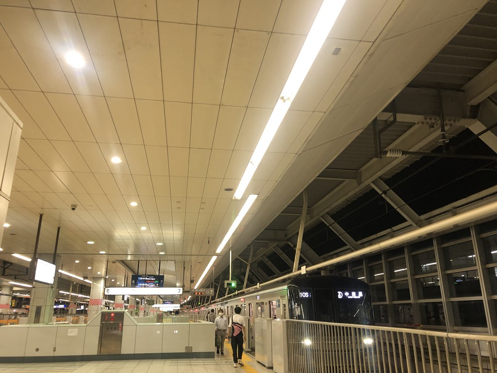
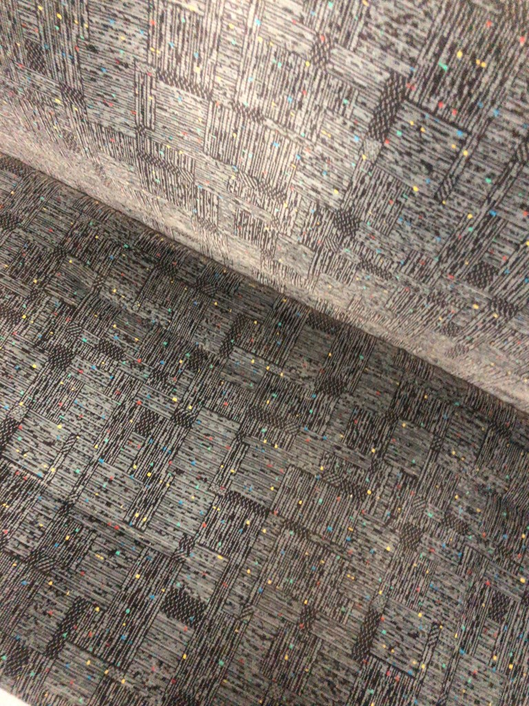

なんとなく言葉について考える
伊勢崎線区間準急の車中からこんばんは。零阪でございます。
さて、今日なんですが特になんも考えずに始めてしまいました。困ったな。
ちょっと今IMEを戻したんで打ちやすくなりました。そう、そういやWordで時々Google日本語入力使えないの地味に不便なんですよね。
何分普段遣いがGoogle日本語入力なもんで、そこにある変換履歴とかが一切共有できないのがしんどい。一台のパソコンの複数のIMEで変換履歴を共有できたら良いんですけどね。
まあそもそも入力において変換という作業が必要な言語が少ないんですけどね。昔の韓国語とかだとハングルを打ってそれを漢字変換みたいにやるかもしれないですけど。
ラテン語系の言語だとだいたい一種類の文字だけで用を済ませますね。まああれも悪くはないんですけど、その分長くなっちゃうというか。
ただ、それに対応するかのように文章を短くしていっているのは確かなようで、私が小学校の頃は冷蔵庫のことrefridgeratorとか教えられてたんですよ確か。
気がついたらfridgeになってました。そいで、多分これは英語と同じ順番を辿ってると思うんですよね。
ここから全体的に適当解釈考察なので間違ってたらごめんなさい。
再＋冷蔵＋するものという情報量が多いものが冷蔵という情報だけで冷蔵庫を示すようになった。これ逆はありえなさそうなんですよね。


さて、場所を移しまして、日比谷線の車内です。日比谷線の車内割と人がいてかつ拙者はビビリなので日比谷線の座席画像は接写です。
単語の短縮っていうのは３種類あると思うんですよね。まず１つ目が「それぞれの要素をある程度切り詰めて縮める」というやつ。２つ目が「要素を取り払って代名詞化」、最後が「音節を取り払う」。
１つ目はニュースピークに見られると思います。ミニパックスとかね。２つ目がさっきの冷蔵庫のくだりだと思います。
最後に当てはまるのはやばいという言葉らしいです。比較的若い略語かつ形容詞に該当するのかなーと思います。気色悪い→きしょい（きしょ＋く＋わ＋るい→きしょ＋い）とかもね。
なんか暴言とかに多いのかなぁ...気の所為だと信じてます。繰り返しになりますが、この記事はあくまでも思ったこととか足らない知識をもとに考えてるだけなので勉強の参考にはしないほうがいいです。
そういえば今、なんとなく「わろし」の口の中の動きをやってみたんですよね。発音はしてませんよ。そのときに「わるし」になった理由がちょっとわかったかもしれないです。
わからろって、要するにあ行→お行の移動で口が開くんですよ。ここまでは良いとして、ろからしがお行→い行で、口を少し閉じる上にベロを使う発音なのでこの移動がめんどくさいんですよね。
でも、わ→る→し＝あ行→う行→い行だと、口を閉じて、少し動かすだけ。発音らく～～～～～。そしてわ＋る＋しから音節をへらすためにわ＋るいになったと。
ここまでをまとめると、今日の仮説としてはわろしからわるし、わるいになったのはまず口の動きを楽にするために真ん中をお行からう行にして、そして音節を減らすためにsの音を削ったから、というわけです。
なんとかきれいにまとまった風になった。よかった。ではまた次のブログで。